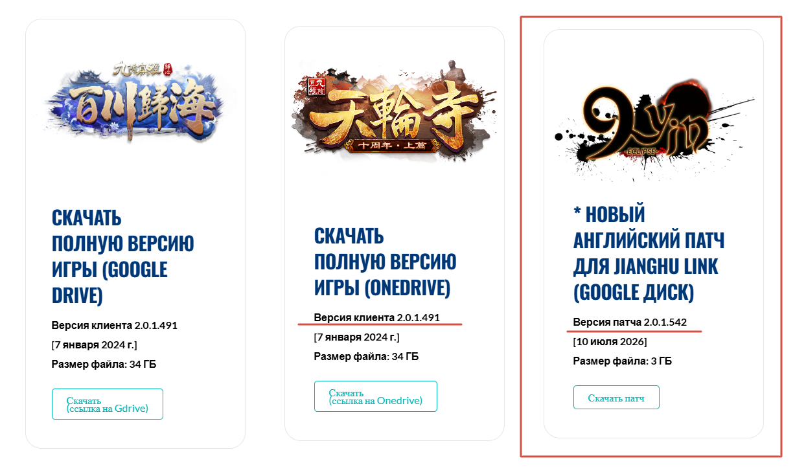

Начало игры
Регистрация и установка
Выберите сервер, создайте аккаунт и скачайте подходящую версию клиента.
Официальный сервер
Тайвань
Создайте аккаунт
Перейдите на официальный сайт регистрации Тайваньского сервера.
Скачайте игру и патч
На сайте Yiuzen размещены клиент игры и необходимый патч.
Дополнительно для Тайвани
Английский патч
Английский патч находится на том же сайте, где размещена английская версия игры. Играть можно и без него — патч нужен для удобства и заменяет часть китайских символов английским текстом.

На сайте выберите карточку «Новый английский патч» ↗Установка английского патча
- Убедитесь, что игровой клиент обновлён и запускается.
- Закройте все игровые клиенты, включая другие версии Age of Wushu.
- Скачайте английский патч на сайте Yiuzen.
- Распакуйте архив и запустите файл
9Y_English_Patch.exe. - Нажмите «Обзор» и выберите папку
resв каталоге игры. - Нажмите «Запустить патч» и дождитесь завершения установки.
Неофициальный сервер
Приватный сервер
Создайте аккаунт
Откройте личный кабинет Приватного сервера и пройдите регистрацию.
Скачайте клиент
Выберите удобный вариант загрузки: отдельными частями или одним архивом.